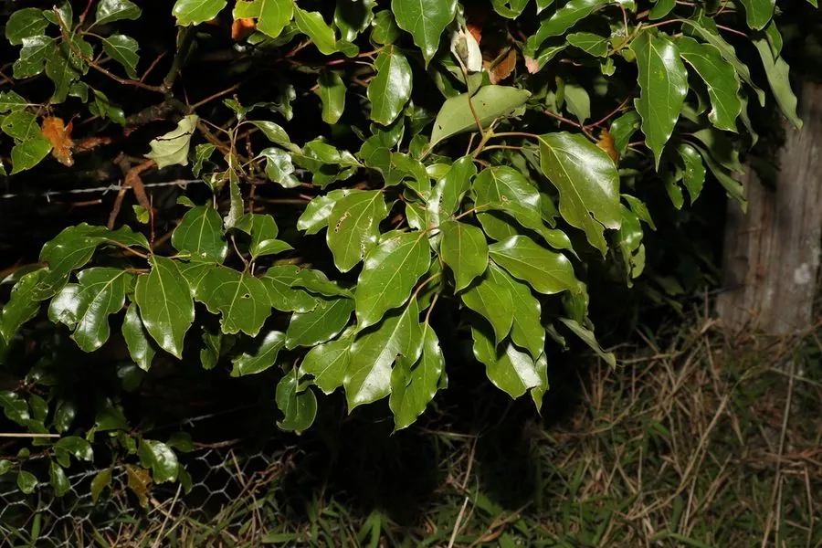

乔木 · 植物界
香樟 Cinnamomum camphora

中国南方常见的常绿大乔木，枝叶揉碎后散发樟脑清香，是优良的行道树与用材树，也是江南古树的主力。
- 分类
- 门被子植物门纲木兰纲目樟目科樟科属樟属
- 栖息环境
- 海拔 1000 米以下的丘陵、平原与村落旁，喜温暖湿润的酸性土壤
- 地理分布
- 中国长江流域以南各省区，东南亚与日本也有分布
- 保护级别
- IUCN 无危（LC）；中国国家二级保护野生植物
物种志
香樟为常绿大乔木，高可达 30 m，树冠广卵形，树皮灰褐色并呈不规则纵裂；单叶互生，卵形或椭圆形，薄革质，揉碎后有浓烈的樟脑香气；春季新叶嫩绿泛红，老叶背面常带白粉。圆锥花序腋生，花小、黄绿色，不甚显著；浆果近球形，成熟时紫黑色，基部具宿存花萼。
香樟原产中国南方及东南亚，喜温暖湿润与深厚肥沃的酸性土壤，在长江流域以南的平原、丘陵与村旁广泛分布，常作为庭院树、行道树与风景林树种。根、枝、叶富含樟脑与樟油，可提取用于医药、香料与防虫；木材致密、耐腐防虫，是制作箱柜、雕刻与乐器的上等材料。由于野生古树资源减少，香樟被列为国家二级保护野生植物。杭州、苏州等江南城市常以香樟为市树或主要行道树，初夏花开时满城清香，也是当地人共同的季节记忆。
形态与习性
- 株高可达 30 m，胸径可达 3 m
- 花期4–5 月，花小、黄绿色
- 果期10–11 月，浆果紫黑色
- 光照喜光，幼树稍耐阴
- 水分喜湿润，不耐干旱与积水
- 土壤深厚肥沃的酸性红壤或黄壤，pH 5–6.5
- 主要用途行道树、家具与雕刻用材、提取樟脑樟油
趣味知识
- 香樟的叶片揉碎后有明显的樟脑气味，这种气味可驱虫防蛀。
- 樟木箱因耐腐防虫、气味清香，曾是江南人家常用的嫁妆家具。
- 香樟春季萌发新叶时老叶集中脱落，形成独特的换叶景观。
- 江西、福建等地保存有大量千年古樟，是重要的古树名木资源。
生态关系
- 栖息 ← 斑腿泛树蛙 树蛙栖息于树冠与枝叶间